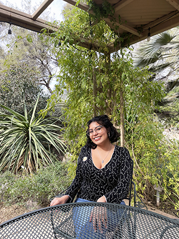

Photo of me
Creator of The Cat Corner

About me
Hey there! I’m Bethany, the creator of The Cat Corner. Thanks so much for stopping by! I’m really passionate about this website and had a lot of fun putting it together — I hope you have just as much fun checking it out.
This is actually my very first website, and I’m super proud of it! I made The Cat Corner as a tribute to my two cats, Raven and Mars, who I miss a lot. I wanted to create a place where cat lovers can come together, laugh, learn, and just celebrate how awesome cats are.
A little about me: I’m 22 years old, and my dream is to build fun websites for a living. When I’m not working on projects like this, you’ll probably find me hanging out at a local coffee shop, playing Pokémon, reading a good book, or spending time in nature.
Thanks again for visiting — I’m really happy you’re here!
Mission Statment
My mission is to create a fun and welcoming community where cat lovers can come together to laugh, learn, and celebrate the joy of cats. Through fun facts, adorable videos, adoptable cats, and opportunities to showcase furry friends, we aim to spread happiness, share knowledge, and strengthen the special bond between people and their cats.